|

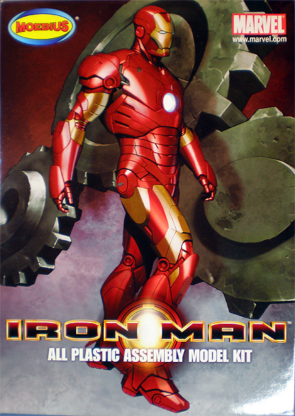
Moebius 1/8 ‘Iron Man’
Kit #905 MSRP $34.95
Images and text Copyright © 2009 by Matt Swan
Developmental Background
In 1963 comic book legend Stan Lee developed the concept of Iron Man, a rich and mechanically talented industrialist with some rather server character flaws such as alcoholism. The original story line has Tony Stark (Iron Man) receiving a heart injury as a result of a terrorist attack on his factory which provides the initial impetus to create the armored suit that has become so recognizable these days. The details of the story line have changed over the years but the ideal of the outwardly invulnerable yet internally wounded vigilante fighting communism, corporate crime or today’s popular subject, terrorism has been maintained.
In 2008 Paramount Pictures released director Jon Favreau’s first Iron Man movie starring Robert Downey Jr. in the lead role. The movie was basically a hit with the movie going public, enough of a hit for Paramount to continue to finance the production of a trilogy. The second movie which retains most of the original actors began filming in April of 2009. As with any successful science fiction movie it does not take long before the memorabilia industry starts producing items for the fan base. In the plastic modeling world the current version of the powered suit has been reproduced in 1/8 scale by Moebius for our entertainment. The first issue of this kit is considered the Mark III which would be the red and gold version. Soon Moebius will be releasing a Mark II kit which is really the exact same kit but done all in chrome plating.
The Kit
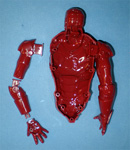
The kit arrives in a solid medium size box with attractive artwork. Inside the single large detailed base piece is wrapped separately and the remaining three sprues of parts for the figure are bagged together. All parts are done in a very dark red high pressure injection molding. This plastic is somewhat hard and brittle. When pieces are removed with sprue cutters the plastic wants to tear small holes into the part. I’ve found the best approach is to either saw the part off or cut it back a few millimeters from the part then file off the excess. No flash is apparent on any of the pieces; all sprue injector gates were relatively small however I did find some sink marks in the armored knee plates that need filling. The engineering design of this kit is very different from that found in most other genres of plastic modeling. Instead of either small locating tabs or no locating tabs at all this kit features very large shafts and mounting holes for nearly all parts. These are designed in such a way that should this be purchased with the intent of being a small child’s toy it could be assembled almost like a snap-together and head right to the sandbox. Another interesting design feature is the sturdy girder like tabs that interlock to other sub assemblies and ultimately to the torso as seen in the image to the left, you can click on that for a better look. Overall the general parts fit is good however to achieve the glossy metallic red finish seen on the box will require a small amount of filler on each and every seam. Taking inventory of the sprues we have thirty six parts to play with and all will be used for the model – no spares or alternative pieces.
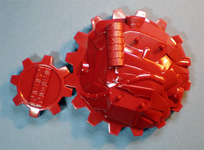
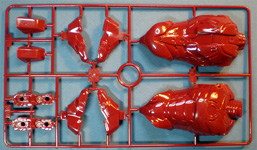
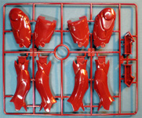
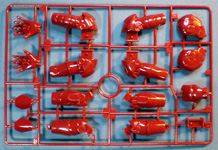
Instructions
While there are no decals for this kit it might have been a good idea to include just one for the display base to eliminate some complex masking around the Iron Man logo. Kit instructions follow a similar pattern to those found in the Moebius Flying Sub model; they include a complete parts map based on full color pictures of the parts trees. Assembly instructions include several photographs of what appears to be the prototype model under construction. I say ‘prototype’ because the kit they used for pictures is all done in light gray plastic rather than the dark red. Personally I would rather have the kit in gray plastic.
Each assembly step contains a well written series of instructions that should be followed to the letter. You are directed to complete the arms and legs as sub assemblies then make the final assembly with the torso. As long as these directions are not strayed from you will not have any trouble building the kit. The final couple panels of the instructions show the model from various angles in full color to assist with masking for final paint. Speaking of final paint, it appears that the best finish is achieved by first painting the entire model gold then masking off select areas and airbrushing about two coats of clear red. I tested this on the feet using Alclad light gold and Alclad transparent red which resulted in a very convincing final color – very sharp.
Conclusions
This is a cool kit that goes together nicely and looks very impressive on the shelf. Parts are well designed, fit together nicely and include well formulated instructions. The plastic is a little too brittle for my liking and the kit simply begs for a lighting package. 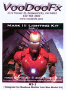
Vanguard Computer Systems, better known to the Sci-Fi modeler as VCS Hobbies, has just what the doctor ordered. They offer a nice little lighting package that includes a small perf board that will accommodate the included ¼ watt 22 ohm resisters and four high output LEDs. It also includes the 9 volt battery holder, some semi-translucent plastic card and ribbon cable – all the goodies needed to light this baby up. Complete instructions come with this kit so just about anybody with a small amount of soldering experience can complete the conversion. JIA Modeling Company also produces an Iron Man lighting package which replaces the head, left arm and right hand with resin cast pieces that incorporate LEDs. The JIA package is about twice the cost of the VCS set but does not require any soldering skills.
Yup, it’s a cool kit and one I would recommend to any fan of the comic book series or movie trilogy. It can be anything you want from the child’s toy to the fully lit and detailed collector’s piece – don’t miss out, get one for your collection now.
The Lighting Package
6/15/09
There is lots of stuff going on in my head with this build so let me unscrew and ear and dump this all on the table. Every time I go to a large model show/contest there seems to be at least one if not more Sci-Fi builds that are all lit up and looking really cool. I’ve always wanted to do this kind of work before and the couple times I attempted it with wheat bulbs I met with limited success. Wheat bulbs generate a lot of heat and have a very limited life span – both not conducive to model building. To avoid both these issues I can use LEDs (light emitting diodes) but now we have a little more electronics involved that to the uninitiated may appear daunting. With LEDs you have to restrict the current flow from your power source or the thing will burn out almost immediately plus, unlike an incandescent bulb that does not care which wire is positive or negative, an LED cares very much. If fact if you hook it up backwards it simply will not function. Now to restrict the current flow you need a resister and if you have ever checked them out there are simply a bazillion different kinds – how do you figure out which one to use??? Oh yeah, did I mention that there are about a half bazillion LEDs to choose from also?
Besides the technical aspect of this you also have the physical aspect. Take a small flashlight, turn it on and press the lens to a piece of plastic – the other side glows. You can’t have this for an effective model. The interior of the model needs to be blacked out wherever there is a light. There are many ways you can do this ranging in complexity and effectiveness and I’ll talk about that in a little more detail later. Really I would like to build and light a 1/350 Star Trek ship but thought it might be a good idea to start with something a little simpler and get the basics down pat. Okay, if you are really unsure of yourself and want to step around a lot of these technical issues you can buy a prepackaged light kit that already has your perf board, LEDS, resistors and wires picked out for you but one thing you are paying for here and paying big time is convenience. For instance, I bought the VooDoo Fx light kit for the Iron man model to use for comparison and spent about $30 after shipping costs. Then I went on-line and bought the stuff I would need to build it myself from an electrical supply house and spent about $10 after shipping (plus got some extra goodies). Same LEDs, same resistors, same wire, slightly different perf board, either approach, VooDoo or my own requires some soldering skill but really, if you can glue a model together and paint it you can probably handle a soldering iron.
LEDs
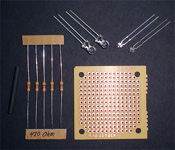
Enough rambling on about all the challenges, let’s start answering some of these burning questions. First, where to buy your supplies; there are several good on-line shops you can go to like AllElectronics.com, LEDsales.com or Unique-LEDs.com just to mention a few. If you don’t want to shop on-line you can go to Radio Shack but you will have a much smaller selection and pay a higher price. Now, what to buy; you will want high output or super bright LEDs that operate in the 2.5 to 5 volt range with viewing angles between 30 degrees and 130 degrees. The 30 degree works better for back lighting. You can buy them in different physical sizes ranging from 5mm (standard) to 3mm and even into 1.8mm and 1.6mm and this is totally dependant on where you plan on placing these things in your model. In my $10 package I bought 15 5mm and about 20 1.8mm LEDs of various colors.
Resistors
Before you can buy a resistor you need to know your power source. Will you be using a battery or a wall plug power adaptor. How much voltage will your power source generate? For this build I am using a 9 volt battery. Your ‘rule of thumb’ formula to calculate your resistor value is very simple – here it is ….
Volts / 0.02 = Resistor Value
This means that a 9 volt battery divided by 0.02 equals 450. So I need a 450 Ohm resistor OR GREATER to do the job. I could not find any 450 Ohm resistors readily available but found plenty of 470 Ohm resistors at 4 cents apiece – Ooooo, real expensive there. I bought 20 of these in my $10 package – more than enough to light up a couple of builds.
Other Stuff
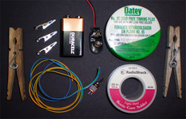
You are going to need a few additional electronic do-dads like;
A battery clip if you are using a 9 volt
or
A power adaptor if you are plugging into the wall
You’ll also want a switch to turn things off and on.
A simple soldering iron with a fine tip
Some flux which will make the actual soldering process work much better than without
A spool of fine solder
A set of small side cutting wire cutters
A small pair of needle nose pliers
Some alligator clips
wooden cloths pins on hand is useful as well.
Having some kind of game plan is useful here like what exactly are you going to light up. This will determine how many LEDs and of what color you will need plus how many resistors you will need. You’ll need to lay this out on some perf board and solder your connections. I bought some large perf board and simply cut it into smaller chunks so one perf board will provide for several projects. The VooDoo perf board includes a little printed circuit that takes care of making your connections from one hole to the next while mine does not so I use a jumper wire to complete the connections. In these images we have the VooDoo Fx board with four LEDs and we have my board for a Colonial Viper with five LEDs and a simple drawing of the circuit for the five LED board (a ladder diagram for you purists).
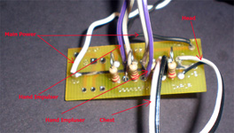
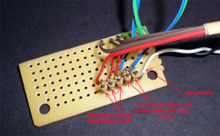
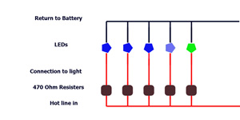
Kit Construction
You may think the lighting is going to be the tough part of this build but it’s not, the paint job is going to be the real killer. First we need to get things put together though. My battery and power switch will be in the base and my main board will be in the torso so some wires need to run through one leg into the base – this will be the first thing to do. Channels are cut into the plastic at key points with a JLC Razor Saw and the power wires are laid in place then the plastic parts are glued together. The impulsor in one hand was carefully cut out and sanded to fit a steel punch. The inside of the hand is painted black. The steel punch was used to punch out a piece of semi-translucent plastic masked with tape which was then inserted into the hand and secured with clear parts cement.
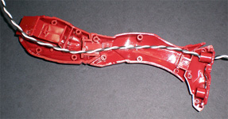
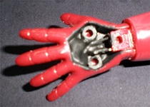
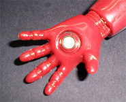
Things in the hand need to cure overnight while the rest of the arm is assembled with the wires and LED laid in place. The next day the hand is fit to the arm and the LED is positioned. It is secured with two spots of hot glue then some clear parts cement is injected into the corners. While the glue was drying the seams were all treated with Mr. Surfacer 500 and allowed to cure overnight. Next all seams were sanded smooth and inspected for imperfections. The interior of the hand was coated again with black acrylic paint and the LED was tested to ensure there was no light leakage. Now the back of the hand is glued in place. Things looked okay so a coat of Krylon gloss black was laid down and a few minor imperfections showed up. The imperfections were filled, sanded and repainted. Everything looks good so a coat of Alclad Gold was laid down. A few more imperfections showed up and I was back to PSR (putty, sand, repeat). Another day goes by allowing the Gold to harden and masks are placed. Now four coats of Alclad Clear Red go down. After a couple hours the masks are carefully removed to reveal a very nice looking arm and leg and it only took four days. Now just have to get the other arm and leg done.
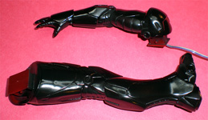
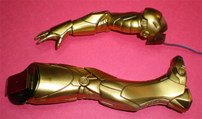
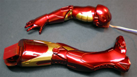
The two finished limbs need to set aside for a day or two to make sure the paint is totally hard and the next two limbs go into the same process. Looking at the chest I need to black things out. While doing some on-line surfing I came across a lighting kit that talked about using a brass tube to prevent light leaks and thought that was a great idea. I didn’t have a brass tube large enough for the chest unit but thought a 10cc syringe might be about right. I picked one up from the local drug store, cut the end off and checked it for size – perfect! Now I give the outside of the syringe two coats of acrylic black. While this is drying the lens for the chest is removed and a piece of semi-translucent white plastic is cut to fit and masked with tape. Clear parts cement is applied to hold this in place. Now I cut off a short section of syringe which is then superglued inside the chest. I form a solid bead of glue around the joint and force it to set with accelerator then paint the glue black. By this time the previously finished hand is completely dry and can be tested – very cool.
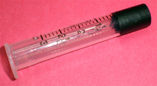
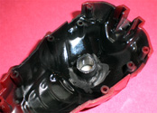
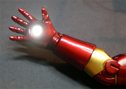
6/27/2009
From here everything is pretty much paint work. The second arm and leg are prepared then primed and painted. Sounds easy but that took another four days at the bench. The torso pieces are also painted separately as are the head pieces. Now the two head shells are assembled to the torso and the seam is repaired. I wrapped a tissue around the neck of the figure much like someone getting a haircut at the barbers then repainted the head. I did it this way to avoid having to paint fin detail into the neck area at this point and possibly messing up the torso paint job. It worked out well. The face shield was painted and set aside to dry. The eyes were filled with clear parts cement and when dry were coated lightly on the inside with white paint. Now I’m ready for final assembly of the figure.
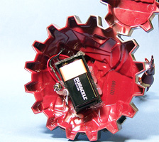
The final electrical connections are made to the board for the arms with each being tested before solder is applied. The chest LED is hot glued into the end of the syringe tube and the glue is painted black. The board and wires are stuffed into the chest cavity, the arms and legs are lightly glued to the locator pins and the back of the torso is snapped into place. I did not glue this piece just in case I need to get back in there some day for repairs. Silver details were then brush painted to the figure. The base was done with more Alclad lacquers, the overall base color is pale burnt metal with burnt iron and steel for the details. The red lettering was brush painted and the black area of the logo was heavily treated with Future floor polish. The power wires were fed into the base then soldered to the switch and battery housing. These last two pieces were hot glued inside the base and a couple drops of superglue help hold the figures feet to the mounting pins in the base.
This was a really fun build and an excellent introduction to lighting plastic models mostly because it’s such a simple electric system, no timers or capacitors to figure out just resistors and LEDs.
In these next pictures my camera was having some trouble focusing in the low light shots and I even used a tripod with remote to try and reduce the fuzz as much as possible but you can get the idea. As a side note, this would make a great night light for some kid – just as long as they don’t play with it.
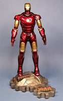
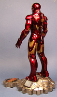
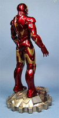
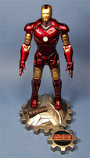
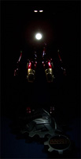
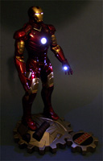
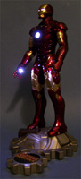
You may click on any of the above images to view larger pictures
|
|


{kind=link}
{kind=link}
{kind=link}
{kind=link}
{kind=link}
{kind=link}
{kind=link}
{kind=link}
{kind=link}
{kind=link}
{kind=link}
{kind=link}
{kind=link}
{kind=link}
{kind=link}
{kind=link}
{kind=link}
{kind=link}
{kind=link}
{kind=link}
{kind=link}
{kind=link}
{kind=link}
{kind=link}
{kind=link}
{kind=link}
{kind=link}
{kind=link}